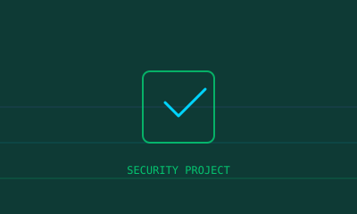

Google Cybersecurity
Professional Certificate covering security foundations, networks, and incident response.
Completed 2024Student and aspiring cybersecurity professional passionate about securing digital ecosystems, mastering offensive and defensive security, and building tools that make the internet safer.
My journey into the world of cybersecurity
$ whoami
Prem — Cybersecurity Enthusiast & Student
$ cat mission.txt
To protect, detect, and respond — building expertise across offensive and defensive security domains while contributing to a safer digital world.
$ status
● Learning | Researching | Building
My fascination with cybersecurity began when I realized how interconnected our digital lives truly are. What started as curiosity about how systems work evolved into a dedicated pursuit of understanding vulnerabilities, building secure applications, and mastering the tools that both attackers and defenders use.
Today, I focus on hands-on learning through labs, CTF challenges, and building security-focused projects. I'm constantly expanding my knowledge across the full spectrum of cybersecurity — from network penetration testing to cloud security, digital forensics, and security automation.
Tools, technologies, and competencies I work with
Validated skills and continuous learning
Professional Certificate covering security foundations, networks, and incident response.
Completed 2024Industry-standard certification validating core cybersecurity skills and knowledge.
In Progress 2025Certified Ethical Hacker — offensive security methodologies and penetration testing.
Planned 2025CCNA fundamentals — routing, switching, and network infrastructure security.
Completed 202350+ rooms completed — offensive security, blue team, and security fundamentals.
Active OngoingActive platform user — machine solves, challenges, and Pro Labs practice.
Active OngoingTools and applications built for learning and defense

My roadmap from fundamentals to advanced security
Python, Bash, and C fundamentals for security scripting and tool development.
CompletedCommand line mastery, system administration, and security-focused distros.
CompletedTCP/IP, DNS, routing, firewalls, and network protocol analysis.
CompletedHTML, CSS, JavaScript, HTTP, and web application architecture.
CompletedCIA triad, threat models, risk assessment, and security frameworks.
In ProgressWeb application vulnerabilities, testing methodologies, and remediation.
In ProgressReconnaissance, exploitation, post-exploitation, and reporting.
UpcomingAWS/Azure security, IAM, container security, and cloud-native threats.
UpcomingStatic and dynamic analysis, sandboxing, and reverse engineering basics.
UpcomingIOC tracking, threat feeds, MITRE ATT&CK, and intelligence analysis.
UpcomingRed team operations, advanced persistent threats, and security research.
Future GoalHands-on practice environments I use daily
Guided learning paths and CTF-style rooms for all skill levels.
Realistic penetration testing labs and competitive challenges.
Web security academy with interactive labs and certifications.
War games for learning Linux, networking, and security concepts.
Beginner-friendly CTF platform with diverse challenge categories.
Global CTF event calendar and team rankings tracker.
Open source contributions and repositories
Writeups, tutorials, and security discoveries
Step-by-step guide covering reconnaissance, enumeration, and exploitation techniques.
Read ArticleAnalysis of SQLi vulnerabilities, bypass techniques, and prevention strategies.
Read ArticleDetailed solutions for RSA, Caesar cipher, and hash cracking challenges.
Read ArticleLearn to create a multi-threaded port scanner from scratch with Python sockets.
Read ArticleCondensed notes on each OWASP category with examples and mitigation tips.
Read ArticleBreaking down a recently disclosed vulnerability and its real-world impact.
Read ArticleLet's connect — opportunities, collaborations, or just to talk security